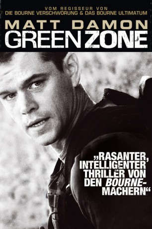

#868 Green Zone
 
 IMDB-Wertung: 6.8 / 10
IMDB-Wertung: 6.8 / 10  Metascore: 63
Metascore: 63 
2003 im Irak: Kurz nach der Eroberung Bagdads durch die USA rückt der US-Armee-Offizier Roy Miller mit seinem Team an, um die besetzten Gebiete zu kontrollieren. Diese abgesicherte "Green Zone" müssen sie bald darauf verlassen, um einer Spur nachzugehen, die sie zu Massenvernichtungswaffen führen soll. Doch die Fährte führt in eine Sackgasse: Sie stoßen nur auf Sprengfallen. Nach und nach stellt Roy Miller mit sein Team fest, dass sie nur Marionetten in einer ausgefeilten Verschwörung sind.
Jahr: 2010
Dauer: 115 Minuten
FSK: 16
Land: Frankreich Studio: Universal Pictures Home EntertainmentTonspuren: DTS - ,
Untertitel: Deutsch,
Auflösung: 1080p (1920x800) Größe: 12800 MB
Genre: Action, Drama, Thriller, Krieg
Regisseur: Paul Greengrass
Drehbuch: Brian Helgeland, Rajiv Chandrasekaran
Soundtrack: John Powell
Darsteller:
 Igal Naor als Al Rawi
Igal Naor als Al Rawi Said Faraj als Seyyed Hamza
Said Faraj als Seyyed Hamza- Faycal Attougui als Al Rawi Bodyguard
 Matt Damon als Miller
Matt Damon als Miller Nicoye Banks als Perry
Nicoye Banks als Perry- Jerry Della Salla als Wilkins
- Sean Huze als Conway
- Troy Brown als Soldier at WMD Site
 Raad Rawi als Ahmed Zubaidi
Raad Rawi als Ahmed Zubaidi Bijan Daneshmand als Zubaidi's Aide
Bijan Daneshmand als Zubaidi's Aide Amy Ryan als Lawrie Dayne
Amy Ryan als Lawrie Dayne Greg Kinnear als Clark Poundstone
Greg Kinnear als Clark Poundstone Michael O'Neill als Colonel Bethel
Michael O'Neill als Colonel Bethel Patrick St. Esprit als Military Intel 2 Star
Patrick St. Esprit als Military Intel 2 Star- Paul Rieckhoff als Gonzales
 Brendan Gleeson als Martin Brown
Brendan Gleeson als Martin Brown Martin McDougall als Brown's Aide
Martin McDougall als Brown's Aide Antoni Corone als Colonel Lyons
Antoni Corone als Colonel Lyons- Ben Sliney als Bureaucrat at VTC
 Khalid Abdalla als Freddy
Khalid Abdalla als Freddy Jason Isaacs als Briggs
Jason Isaacs als Briggs- Jeffrey John Carisalez als TF221
 Omar Berdouni als Righteous Ali
Omar Berdouni als Righteous Ali Eric Loren als CIA Tech
Eric Loren als CIA Tech- William Meredith als CPA Presser
- Tommy Campbell als Chopper Comms Commander
 George W. Bush als Himself - US President , archive footage, uncredited
George W. Bush als Himself - US President , archive footage, uncredited Aymen Hamdouchi als Ayad Hamza
Aymen Hamdouchi als Ayad Hamza- Michael J. Dwyer als Met-D
- Edouard H.R. Gluck als Met-D
- Brian Siefkes als Met-D
- Adam Wendling als Met-D
- Abdul Henderson als Met-D
- Paul Karsko als Met-D
- Robert Miller als Met-D
- Eugene Cherry als Met-D
- Alexander Drum als Met-D
- Brian VanRiper als Met-D
- Matthew Knott als Met-D
- Nathan Lewis als Met-D
- John Roberson als Infantry Sergeant
- Bryan Reents als Poundstone Aide
- Michael Judge als JMOC Tech
- Jonah Stevenson als JMOC Soldier
- Allen Vaught als Colonel Jonathan Vaught
- Timothy Ahern als General at VTC
- Whitley Bruner als Senior CIA Man at VTC
- Intishal Al Timimi als Hawkish Iraqi
- Driss Roukhe als Tahir al-Malik
- Muayad Ali als Qasim
Datei: X:\2010(G-M)\Green Zone (2010, FSK16, 1920x800).mkv seit 09.04.2015
Festplatte: HD 2010(G-Z)-2011(A-F)
 Es gibt insgesamt 85 Filme in der Gruppe '2010(G-M)'
Es gibt insgesamt 85 Filme in der Gruppe '2010(G-M)'